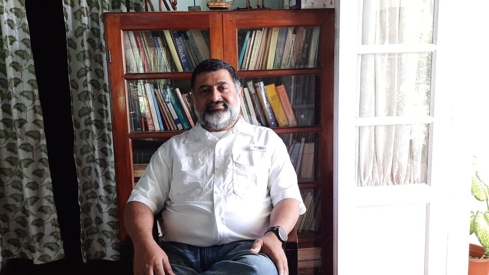

Welcome

Dr. Mathai Fenn
Cognitive Psychologist
mathai@fenn.net
I'm Mathai Fenn — a cognitive psychologist by training, and someone who's spent a good part of life thinking about how people learn, change, and make sense of things. I did my PhD at IIT Bombay, taught for years at XLRI Jamshedpur where I led the Organizational Behaviour area, and later found myself teaching in Armenia for a while — not somewhere I'd ever have guessed I'd end up, but glad I did. These days I run The Talk Shop from Kottayam, Kerala, along with a small constellation of other things you'll find below.
If you want more about my academic journey, my cv is available for download (pdf).
Underneath everything I do is one quiet question I've carried my whole life: how do people think? How do we learn, make sense of a life or a moment, change when we need to. That question is why I sit with senior executives and help them think more clearly, why Fenn Hall is built around making a guest feel truly welcomed rather than efficiently served, why a rubber plantation in Vazhoor is slowly becoming a place for people to grow older with dignity and company. Different rooms, different people — but it's the same question I carry into each one.
What I Do
I work with two kinds of minds: individual people, and the strange collective mind that forms when people work together in a firm. Organizations think the way a termite colony builds its towering mounds in the savanna — no single termite has a blueprint, no one's in charge, and yet somehow the whole thing rises, ventilated and load-bearing, out of a thousand tiny decisions made in the dark. Firms are like that too: nobody's holding the whole picture, but the swarm keeps building, out of habit as often as out of sense. Most of what I do is the same job either way — someone brings me a tangle, and I help them find the thread worth pulling. For a person, that tangle might be a career decision, or a way of seeing themselves that's stopped working. For a firm, it's usually a decision nobody can quite make, or an old way of doing things nobody remembers choosing. This is cognitive science at work, really — just applied to people instead of termites.
If you want to learn more about the work I do, checkout The Talk Shop.
The Ecosystem
Everything below is cognitive science, put to work in the world. Call them experiments with truth, if you like — trials still in progress, not finished businesses. The Talk Shop is the thinking end of it: consulting, training, research, publishing. Fenn Hall is where hospitality gets tested against the idea that warmth matters more than efficiency. Fenn Farm is a rubber plantation, slowly becoming a place for people to grow older well. SAMM is the not-for-profit arm — community service, including Eugeria's work on healthy ageing. And if you'd simply like to sign up, ask a question, or say hello, that's what the Contact page is for.
Read more about all of it, and where I could use a hand, on the Projects page →.
Brief Biography
In 2005, I stood up in front of a room and introduced myself as a cockroach.
I live in the cracks of the sidewalk. I am fascinated by the refuse of modern living. I prefer darkness to light. But I am a survivor — built to outlast catastrophes that wiped out nearly everything else.
Framework
In 2005, I introduced myself to a room as a cockroach. Not as a joke. As a description of how I work.
- I live in the cracks — the space between narratives, never fully claimed by one dominant story.
- I feed on refuse. As a boy, when my parents came home from abroad, I didn't want souvenirs. I wanted old newspapers — the classifieds especially. Want-ads, hire notices, what a town was quietly trying to buy or sell. Nothing tells you the truth of a place faster than what it throws away.
- I prefer darkness. I don't reach for the first explanation everyone else has already agreed on. What hasn't been explained yet, I leave unexplained — on purpose.
- I survive. The ones who mistake their truth for The Truth are the first to break when the ground shifts. I never had a fixed shape to lose.
This isn't a personality quirk. It's a method. I call it world-building — constructing a working model of how things fit, knowing I'll never build the whole of it, testing pieces against experience, discarding what doesn't hold. The cockroach forages in the cracks. World-building is what I do with whatever it finds there.
Family
In 1981, I noticed Jessy had read most of the books I had. Obviously, I thought, she's searching for the soul too. Everyone else — including my own mother — warned me against marrying someone smarter than me. I married her anyway. Reader, she has the better career.
We have two sons. Amit followed the family trade — a PhD, this time in molecular biology, from TU Munich. Asked at his next interview what a biologist knows about computers, he said, "I maintain four Unix machines at home." He got the job.
Having watched three PhDs pile up in the house, our youngest decided to take a different route. A principal once informed Rohit that his grades wouldn't survive 10th standard. Rohit responded by reinventing the toilet flush, becoming a Google Science Fair finalist, and dragging his older brother along to Googleplex for the final. He's been inventing things ever since — these days, alongside Amit, a company that can identify every animal and bird in a landscape from nothing but a sample of air.
There's more — much more — on the Family page →.
Library
I've always loved libraries as places where you can stumble into knowledge you didn't know you wanted. In college, I once pulled a bright red hardcover off the shelf for no better reason than the colour — it turned out to be Albert Ellis on Rational Emotive Therapy, and I read the whole thing purely because the jacket caught my eye. That kind of discovery doesn't happen when you type a question into a box and get an answer back. It only happens when you're allowed to wander. We used to check the card at the back of a library book, too, to see who'd read it before us — that card was its own kind of trail.
This library has two rooms. One is a set of finished, standalone essays — long-form, complete, written to be read start to finish. One of my favourites, if you'd like a place to begin: clinging to a rock face 3800 metres up in Armenia, unable to see what's above or below me, and falling in love anyway. Read it →
The other room is Quartz — transparent, many-sided, and also, handily, the name of the software it runs on. A small, growing set of notes, some standalone, some just a comment or two wrapped around a YouTube video or a document worth your time. Some of these notes eventually grow up into full essays for the other room. Consider them my card at the back of the book, left for you to find.
It works a little differently from a normal website. Start on the left, browsing the folder tree — calm and structured, until something catches your eye. Click into any note, and follow the connections that appear as you go, one at a time rather than all at once. Already know what you're looking for? Use the search bar. Either way works — wander, or go straight to what you need.
I hope you'll come back often — and if you'd rather I sent updates directly, let me know and I'll add you to the list.
Contact
If you'd like to get in touch — email, phone, a contact form, or to sign up for updates — everything lives on the Contact page.